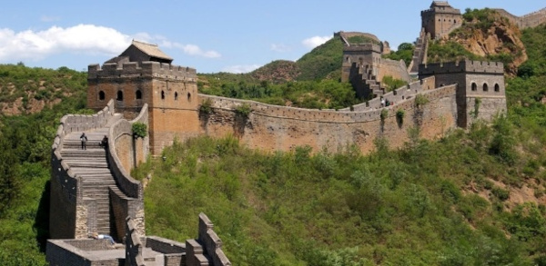
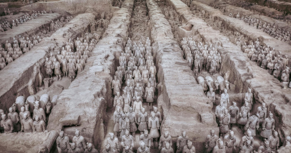
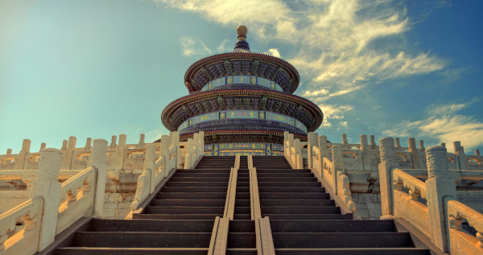
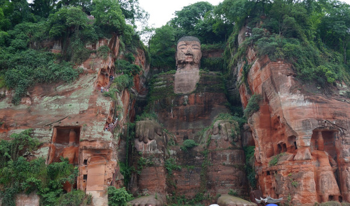
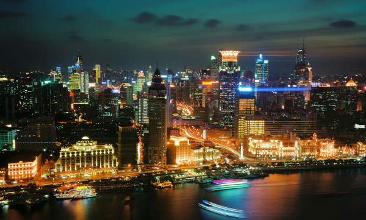
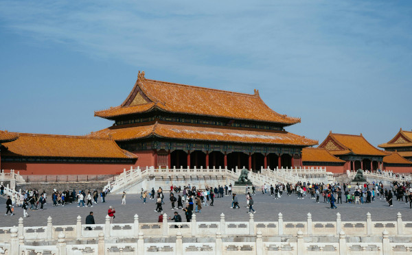
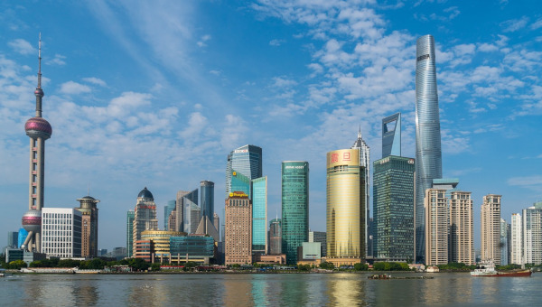

China: Um Mergulho em Milênios de História e Cultura
A China, um país vasto e diversificado, é uma terra de contrastes e maravilhas que cativam viajantes de todo o mundo. Com uma extensão que abrange desde as montanhas geladas do Himalaia até as praias ensolaradas de Hainan, a China oferece uma variedade de paisagens, culturas e histórias que desafiam a imaginação e encantam a todos que o exploram. Desde as grandes metrópoles tecnológicas até as comunidades rurais que preservam tradições milenares, a China é um destino que oferece uma experiência de viagem única e inesquecível.
Viajar pela China é uma jornada através de contrastes fascinantes. Você pode passear pelas ruas animadas de Pequim, explorar os parques nacionais de Zhangjiajie e Jiuzhaigou, ou desfrutar de um mergulho nas águas cristalinas de Sanya. A diversidade cultural e natural da China oferece uma experiência enriquecedora, onde cada dia pode trazer novas descobertas e aventuras.
Neste guia de viagens, vamos explorar as dicas essenciais para tornar sua aventura na China inesquecível, desde a preparação pré-viagem até as experiências que você não pode deixar de vivenciar. Prepare-se para uma jornada que irá expandir seus horizontres e deixar uma marca indelével em sua memória.
Documentação e Visto
Brasileiros precisam de visto para viajar como turista para a China. As únicas exceções são as cidades de Hong Kong e Macau, que estão em território chinês e não exigem vistos para brasileiros. Também é dispensado o visto para pessoas que somente fazem uma conexão na China. Vale lembrar que é importante que o seu passaporte seja válido por pelo menos seis meses após a data de entrada na China.
Melhor época para visitar
A China pode ser visitada em qualquer época do ano, mas a primavera (abril a maio) e o outono (setembro a outubro) são ideais, com temperaturas agradáveis e paisagens bonitas. O verão pode ser quente e úmido, especialmente no sul, enquanto o inverno, especialmente no norte, é frio e seco.
Idioma
O mandarim é a língua oficial, mas muitos chineses falam outros dialetos, especialmente em áreas urbanas.
Em cidades turísticas como Shanghai e Beijing é mais fácil se comunicar em Inglês. E como os chineses estão acostumados a utilizar tecnologia no seu dia a dia, é comum eles utilizarem aplicativo de tradução para entender os extrangeiros e poder se comunicar com eles.
Moeda e pagamentos
A moeda oficial é o yuan (CNY). Embora dinheiro em espécie ainda seja amplamente utilizado, as plataformas de pagamento digital como Alipay e WeChat Pay dominam o cenário de pagamentos na China. Em algumas áreas mais rurais, você pode precisar de dinheiro em espécie, mas nas grandes cidades, o pagamento por smartphone é o mais comum.
Segurança e Internet
A China é um país seguro para viajantes, com baixa criminalidade em áreas turísticas. No entanto, vale lembrar que a internet é altamente regulada, e muitos serviços globais, como Google, Facebook e WhatsApp, são bloqueados. Portanto, considere usar uma VPN para acessar esses serviços enquanto estiver lá.
Cultura e etiqueta
A China tem uma cultura profundamente enraizada no respeito e na cortesia. É importante entender e seguir algumas regras culturais, como evitar tocar a cabeça das pessoas (considerado desrespeitoso) e usar ambas as mãos ao entregar ou receber algo, especialmente cartões de visita.
Pontos turísticos da China
1. A Grande Muralha da China

A Grande Muralha da China é um dos destinos que, com certeza, a maioria das pessoas já ouviu falar. Isso porque, além de ser o ponto turístico mais famoso do país em questão, é também um dos mais conhecidos no mundo. E não para por aí: ela foi considerada, nada mais nada menos, uma das sete maravilhas do mundo moderno.
Ela é a maior obra arquitetônica do mundo, sendo feita de pedra, tijolo, terra compactada, madeira, entre outros materiais. Além disso, ela conta com 21,196 quilômetros de comprimento, o que torna impossível visitá-la por inteiro.
Uma recomendação interessante é conferir a parte mais visitada (e acessível) dela que conta com bastante turistas e vendedores: Badaling — a 80 quilômetros do centro da cidade de Pequim, possível de chegar de transporte público. Entretanto, a parte mais preservada é a oriental de Simatai — a 110 km da capital.
E qual a importância desse destino? A Grande Muralha da China foi construída devido a invasões dos povos do norte vindos da Mongólia e da Manchúria. Ela começou a ser erguida pelo primeiro imperador do país em 220 a.C. e terminou apenas no século XVI, sendo, assim, um grande marco histórico.
2. Exército de Terracota de Xian

Mais um dos principais pontos turísticos da China é essa atração que passou mais de dois mil anos enterrada. Isso mesmo! E foi a partir de escavações nos sítios arqueológicos nas planícies circundantes de Xian (grande cidade na China central) que se encontrou o Exército de Terracota.
Terracota é uma espécie de argila, cujo material fizeram uma coleção de esculturas de cavalos, carrocerias, armas e assim por diante.
Agora, o detalhe curioso sobre essas obras: Qin Shi Huang, o primeiro imperador da China, também teve participação fundamental aqui. As esculturas seriam uma arte funerária, enterradas com o imperador em 210-209 a.C., com a finalidade de protegê-lo na sua vida após a morte.
3. Templo do Céu

Fonte: Pexels
O Templo do Céu é extremamente grande. Desse modo, o ideal é levar um mapa. Desse modo, você saberá para onde ir e também vai conseguir conhecer as atrações que escolher. Inclusive, esse também é um destino pago e o valor dependerá dos locais que você quiser conhecer lá dentro.
Ele data do começo do século XV e fica no parque Tiantan Gongyuan, ao sul de Pequim. A construção que mais chama a atenção é um templo redondo. Porém, a atração trata-se de um conjunto de templos que estão no parque em questão, o qual dispõe de uma imensa área verde, com 60 mil árvores de espécies diferentes.
O Templo do Céu, em sua origem, era lugar para pedir pelas lavouras e agradecer ao Céu pelos frutos, em uma cerimônia chamada Heaven Worship Ceremony (ou Cerimônia de Culto ao Céu).
4. Grande Buda de Leshan

Fonte: Pixabay
Esse Buda, o maior do mundo, com 71 metros de altura e 28 metros de largura, foi esculpido — processo que demorou 90 anos — por um monge chamado Haitong nas montanhas de Leshan e Emeishan. Assim, hoje, ele é considerado Patrimônio Mundial pela UNESCO desde 1996.
Ele se localiza na junção dos rios Minjiang, Dadu e Qingy — sendo possível, inclusive, realizar passeios de barco na área — que, por suas vezes, estão situados perto da cidade de Leshan.
5. O Bund

O Bund é um famoso bairro de Xangai. Ele abriga boa parte da história colonial e moderna da cidade, estampada nos diferentes prédios. A arquitetura eclética inclui estilos como neoclássico, gótico, românico e renascentista. Além disso, essa é uma das atrações turísticas da China à beira-mar. O calçadão ao longo do Rio Huangpu é um lugar popular para passeios a pé. Ele oferece uma atmosfera relaxante e uma vista panorâmica do rio e das atividades na água.
Os barcos de cruzeiro passando pelo rio e a arquitetura do outro lado configuram uma paisagem admirável. Do lado oposto da passagem fluvial, em Pudong, você pode desfrutar de uma vista espetacular do skyline moderno de Xangai, com arranha-céus impressionantes. À noite, o local é especialmente deslumbrante. Além da arquitetura e das vistas, o Bund também oferece opções de compras e entretenimento ao longo da área, tornando-se um local diversificado e dinâmico para explorar.
6. Cidade Proibida

Fonte: Pexels
Também conhecida como Palácio Imperial, a Cidade Proibida é um dos pontos turísticos da China com uma história secular. Ela está localizada no coração de Pequim e é um dos locais mais visitados por turistas. O nome "Cidade Proibida" refere-se ao fato de que o acesso ao palácio era estritamente controlado e não era permitido para o público em geral. Somente o imperador, a família e os servos mais importantes tinham permissão para entrar no recinto.
Além de ter mais de 500 anos de história de imperadores das dinastias Ming e Qing, a arquitetura do palácio é impressionante: são 180 acres e mais de 8.700 quartos. As estruturas são organizadas simetricamente ao longo de um eixo central, refletindo a crença na ordem celestial, e os diversos jardins são um espetáculo à parte.
7. Pudong

Fonte: Pexels
Pudong têm arranha-céus futuristas e iniciou seu desenvolvimento na década de 90. Nessa região, além de se deslumbrar com os edifícios tecnológicos, você também poderá traçar roteiros em museus, parques, restaurantes e até mesmo na Disney, que também tem uma unidade em Xangai.
8. Terraços de Arroz de Honghe Hani
Para quem gosta de apreciar paisagens exuberantes, os Terraços de Arroz de Honghe Hani são ideais. Essa maravilha agrícola está localizada na província de Yunnan, no sudoeste do país. Os terraços são um exemplo notável de engenharia agrícola, projetados para otimizar o uso da água da montanha e criar condições ideais para o cultivo de arroz em diferentes altitudes. Eles seguem o contorno dos montes, formando um cenário espetacular e harmonioso, e precisam estar na sua lista de “o que conhecer na China”.
A prática dos terraços é secular. Eles são atribuídos principalmente ao grupo étnico Hani, que passa os conhecimentos para as gerações seguintes, e foram designados como patrimônio mundial da Unesco em 2013. A Unesco reconheceu não apenas a beleza do local, mas também a maneira sustentável com que a comunidade utiliza os recursos naturais para realizar as atividades produtivas.